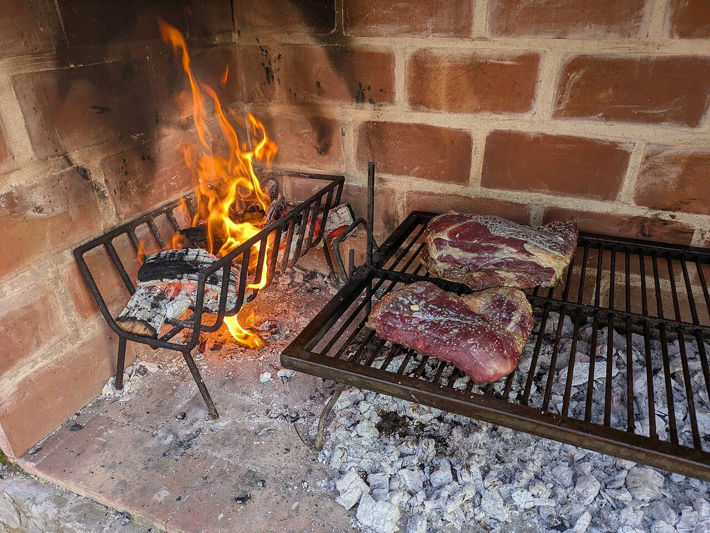
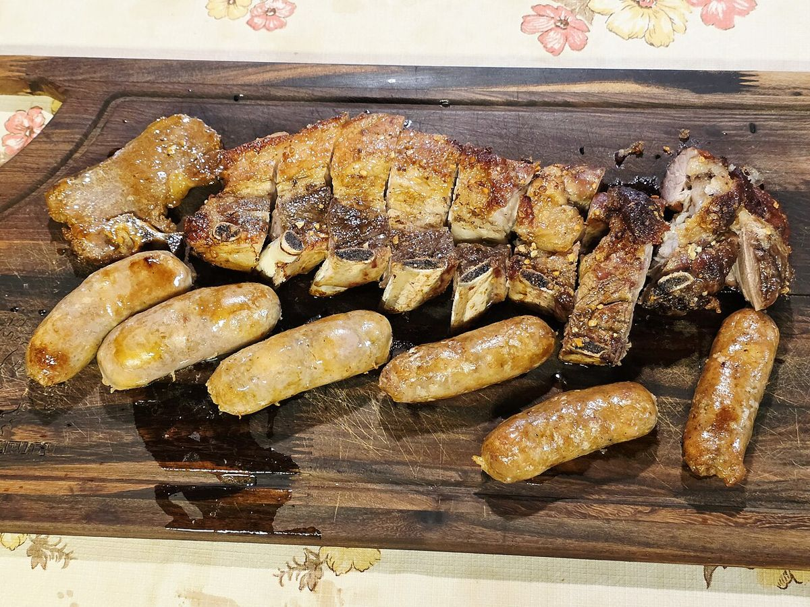
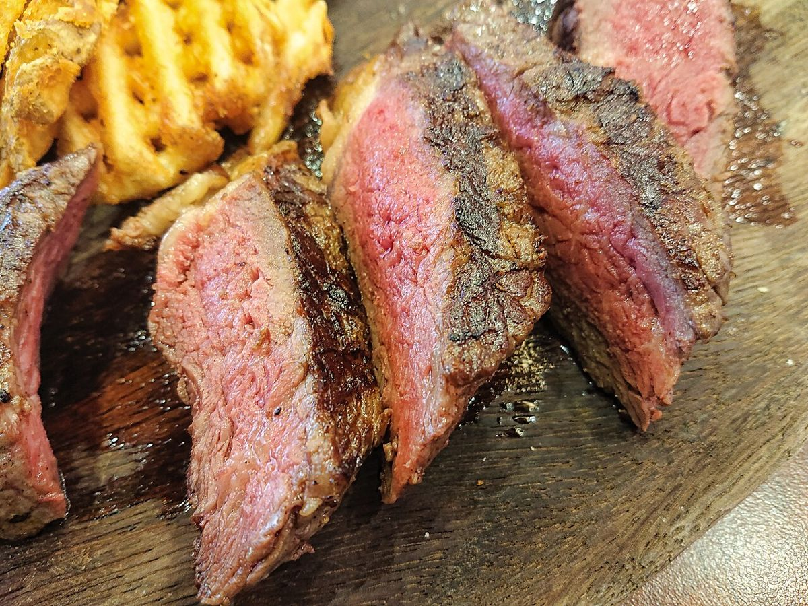
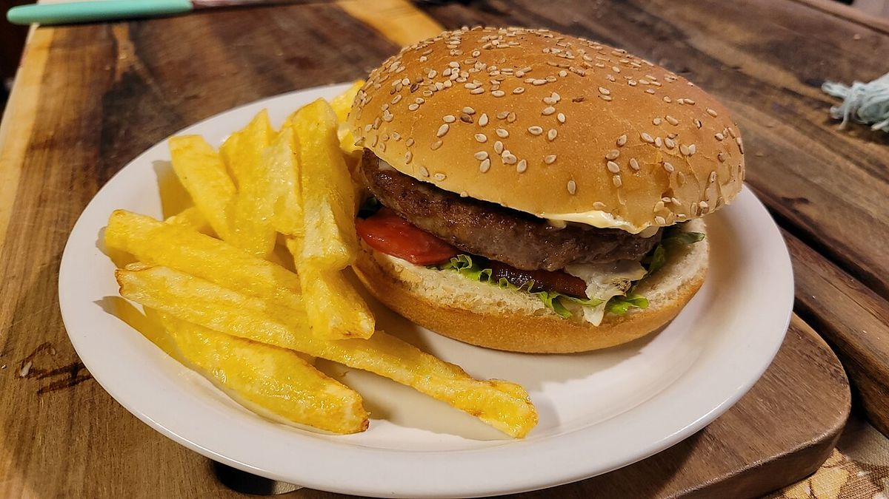
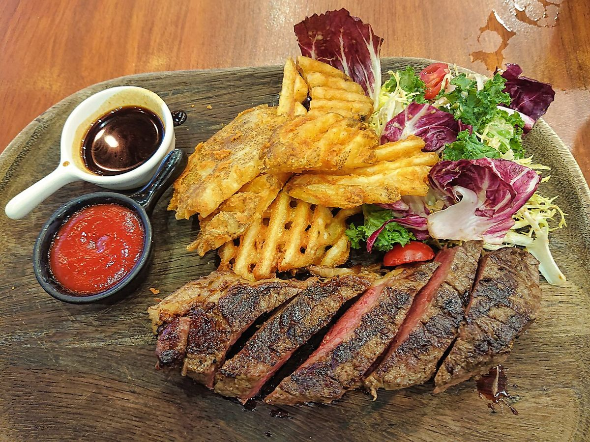

Valoración
★★★★★ 4.6
Parrilla argentina — Sant Andreu, Barcelona
Así lo dicen, una y otra vez, en 860 reseñas. Carne a la brasa, patatas hechas a mano y un menú del día que la gente todavía no se cree.

La brasa manda. Todo lo demás gira alrededor de la parrilla.
De dónde viene el nombre
Austral significa “del sur”. En Argentina es la palabra de la Patagonia: asados largos, fuego lento y mesas que se comparten. El nombre dice lo que hay en la carta.
La parrilla de Sant Andreu funciona con esa misma lógica del sur: fuego directo, cortes generosos, sal gruesa y nada que distraiga de la brasa. Un pedazo del sur argentino, trasplantado a un local de barrio en Barcelona.
Síguenos en @australparrilla
Lo que pide todo el mundo




"Pedí la parrilla" — es lo primero que te va a decir cualquiera que ya haya estado.Lo más repetido en las reseñas
El menú del día, por lo que cuesta, no debería ser tan bueno.Sobre la relación calidad-precio
| Lunes | Cerrado |
| Martes a jueves | 13:00–16:00 |
| Viernes y sábado | 13:00–16:00 / 20:00–00:00 |
| Domingo | 13:00–16:00 |